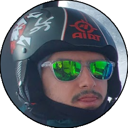
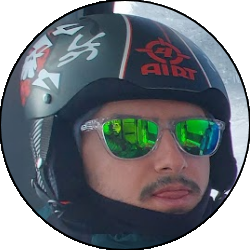

Relazione
| Data Uscita | 26-03-2023, Domenica | Area | Grigne |
|---|---|---|---|
| Luogo di Partenza | Piazzale Daniele Chiappa ai Piani Resinelli - Abbadia Lariana (LC) | Quota |
1278m la partenza 1730m il Rifugio Rosalba |
| Dislivello | 700m (circa) | Tempi | 06:00 ore |
| Esposizione | Varie, per lo più Sud/Sud-Est | Difficoltà Tecnica | T3 |
| Punti di Appoggio | Rifugio Rosalba | Acqua | No |
| Partecipanti |
 Oracolo,
 Scotty Oracolo,
 Scotty
|
||
(clicca sull'immagine per scarica la traccia GPS)
Accesso
Da Lecco salire in Valsassina fino a Ballabio. Alla rotonda all'ingresso del paese prendere verso sinistra e subito dopo a destra salendo poi per i tornanti fino ai Piani Resinelli. Parcheggiare nel grande piazzale appena arrivati ai Resinelli (da Maggio 2023 a pagamento, 5€ al giorno).
Giro
Dal Piazzale tornare indietro e prendere la strada in salita che, passando sotto al Forno della Grigna, sale fino a un bivio dove si prende a sinistra in direzione rifugio Porta. Raggiunto il rifugio inoltrarsi nel bosco alle spalle dello stesso, che sale fino a un bivio (cartelli) dove si tiene a sinistra imboccando il sentiero della Direttissima. Il sentiero sale traversando a mezza costa verso Ovest, si oltrepassa un largo canalone (il Caimi) e una deviazione poco evidente (sentiero delle Capre, lasciarlo a destra), finchè con qualche tornante si giunge alle prime catene.
Salire le catene che permettono di guadagnare dislivello in fretta fino a una cengetta, che si segue fino a un traverso con staffe nella roccia che porta nel fondo del canale Pagani. Salire ora le due tipiche scalette, con passo iniziale strapiombante, che entrano poi in uno stretto passaggio (il caminetto Pagani) breve ma caratteristico. Sbucati al di là non prendere la traccia che sale (cartello di divieto) ma scendere verso sinistra seguendo una traccia che poi diventa evidente, che a saliscendi supera diversi canali dove i pezzi più esposti sono attrezzati con catena e qualche piolo. Si arriva eventualmente alla base di un altro largo canale (il canale dei Piccioni), dove salendo qualche facile roccetta a sinistra si arriva a un ulteriore bivio ovvero la selletta del Fungo (cartelli), dove si prosegue dritti fino ad arrivare all'imbocco di un altro canale dove il sentiero si divide in 3.
Salendo a destra di imbocca il canale Angelina, invece proseguendo e poi imboccando il sentiero in salita si percorre ancora la Direttissima verso il Colle Valsecchi. Entrambi i sentieri volendo portano verso il Rosalba, ma quello che prendiamo noi è invece quello che scende verso sinistra, ovvero il sentiero Giorgio, indicato da un vistoso cartello. Perdere quota seguendo una traccia che passa su prati ripidi, per poi iniziare a traversare a destra seguendo altri saliscendi che attraversano canali, placchette e roccette. Superato un pezzo in salita un po' più verticale il sentiero continua a traversare verso Nord-Ovest fino a infilarsi in un largo canalone, dove il sentiero sale sui prati a sinistra a tornanti raggiungendo così il Colle Garibaldi, dove la vista si apre anche verso il Grignone. Prendere ora il sentiero che scende verso sinistra, passando sul versante Nord (attenzione a inizio stagione) e in breve arriva al già visibile e bellissimo rifugio Rosalba.
Dopo una meritata pausa al rifugio, scendere direzione Resinelli seguendo il sentiero delle Foppe (cartelli), che con diversi tornanti percorre tutti i prati del Pertusio fino a entrare nel bosco, dove si riporta verso sinistra e con qualche saliscendi arriva nel fondo di un canale. Superata una breve risalita nel bosco si arriva a una strada carrareccia, che va seguita per intero fino a dove questa diventa asfalto nei pressi di un crocevia con stanga. Seguire ora la strada in asfalto in salita (verso sinistra), un po' noiosa ma costante, che in qualche chilometro riporta al piazzale dei Resinelli.